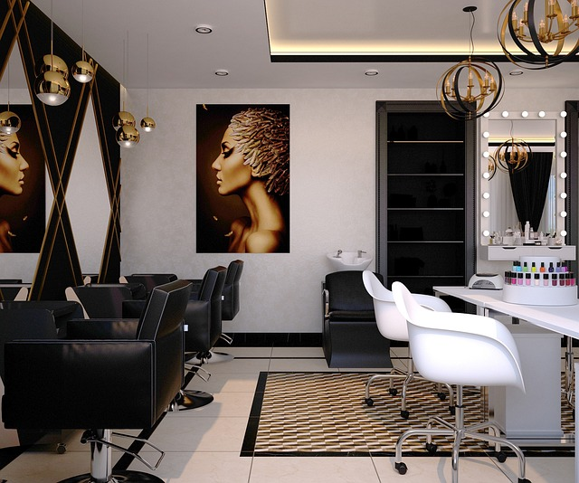
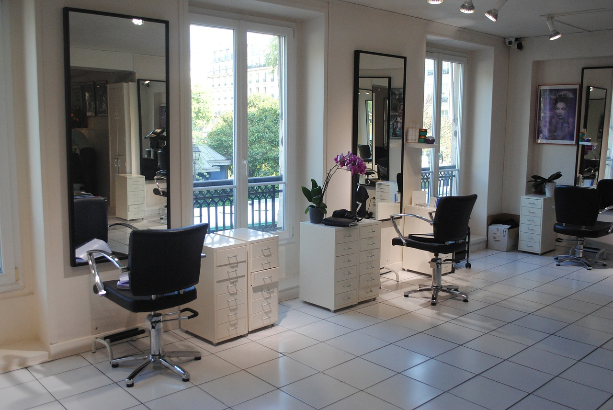
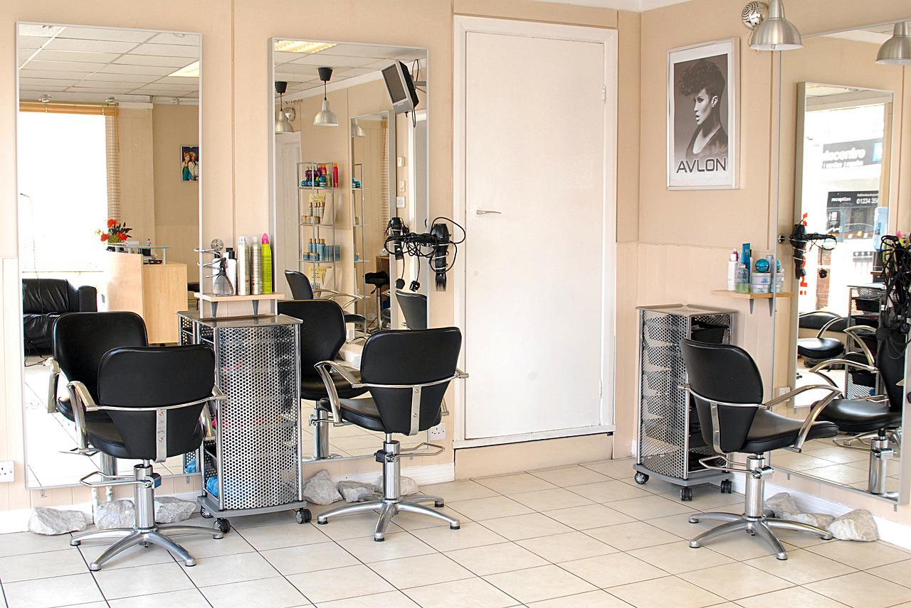
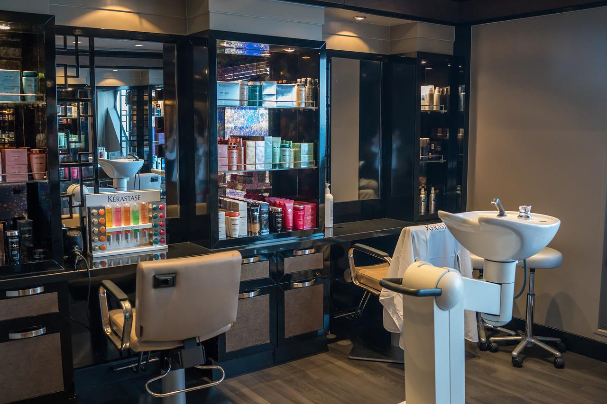

QUIENES SOMOS
La pelu es el establecimiento al cual la gente asiste para cortar o dar cierto estilo a su cabello. En nuestro salón entendemos que este concepto tan general y tradicional debe de ser ampliado para ofrecer las necesidades que demanda la sociedad actual. Por eso nuestro Salon, no es un Salón de Belleza cualquiera, nuestra diferenciación se basa en ofrecer un servicio de calidad para conseguir una belleza natural y obtener así un valor añadido para el cliente que hace que una actividad rutinaria se convierta en un momento muy especial. Trabajamos con productos formulados a base de extractos vegetales naturales cuidadosamente combinados para garantizar una acción determinada. Ofrecemos todos los servicios de peluquería y estética, pero si lo que necesitas va más allá de lo habitual, podemos asesorarte y cambiar tu imagen o realizar el servicio completo para tu boda. Somos profesionales de la imagen, tenemos un servicio de asesoramiento de imagen e incluso ofrecemos la posibilidad de solicitar servicios a domicilio.

NUESTRO SALON
Para el perfecto cuidado de su cabello y su piel, nuestro Salón de Belleza pone a su disposición un equipo de profesionales que le ayudarán a escoger el estilo que mejor se adapte a sus necesidades.



NUESTRO EQUIPO
Vitoria Martinez
Victoria Martínez es una estilista con una reputación excepcional
en el mundo de la peluquería y la colorimetría. Con más de dos décadas
de experiencia en la industria, Victoria es conocida por su creatividad
y habilidades innovadoras. Su capacidad para transformar el cabello y
realzar la belleza de sus clientes es incomparable.
Capacidades y conocimientos:
Dominio de Técnicas de Corte: Victoria es experta en una amplia variedad
de técnicas de corte, desde cortes clásicos hasta tendencias
vanguardistas. Su precisión y atención al detalle son legendarias, lo
que garantiza resultados impecables. Colorimetria Avanzada: Victoria es
una verdadera maestra en la ciencia del color del cabello. Especializada
en la colorimetría avanzada, puede crear una gama infinita de tonos y
matices para satisfacer las necesidades y deseos de sus clientes, desde
sutiles reflejos hasta colores vibrantes. Asesoramiento Personalizado:
Victoria se enorgullece de brindar un servicio de asesoramiento
personalizado a cada uno de sus clientes. Escucha atentamente sus deseos
y necesidades, analiza sus rasgos faciales y estilo de vida, y luego
crea un look que realce su belleza única. Tendencias de Moda: Siempre
está al tanto de las últimas tendencias en moda y belleza. Victoria
asiste regularmente a seminarios y conferencias para mantenerse
actualizada y ofrecer a sus clientes las últimas novedades en cortes y
colores de cabello. Habilidad para Resolver Problemas: En su larga
carrera, Victoria ha enfrentado y resuelto una amplia gama de desafíos
capilares. Ya sea corrigiendo errores de coloración anteriores o
restaurando el cabello dañado, tiene la habilidad y el conocimiento para
abordar cualquier problema con confianza. Énfasis en la Salud del
Cabello: Victoria se preocupa profundamente por la salud del cabello de
sus clientes. Siempre utiliza productos de alta calidad y técnicas que
minimizan el daño capilar y promueven la vitalidad y el brillo del
cabello. En resumen, Victoria Martínez Pérez es una estilista ficticia
altamente cualificada y respetada en la industria de la peluquería y la
colorimetría. Su habilidad para combinar la creatividad con el
conocimiento técnico la convierte en una elección inigualable para
quienes buscan transformar su cabello de manera espectacular y
mantenerlo saludable.
Max Colori
Maximiliano "Max" Colori es ampliamente reconocido como el
estilista más genio en el campo de la colorimetría capilar. Su talento y
experiencia en la manipulación del color del cabello son insuperables.
Max ha revolucionado la industria de la peluquería con sus innovadoras
técnicas y su capacidad para crear resultados impresionantes y únicos.
Capacidades y conocimientos:
Genialidad Creativa: Max tiene una mente creativa excepcional que le
permite ver el cabello como un lienzo en blanco. Puede concebir y
ejecutar ideas audaces y artísticas que transforman el cabello en obras
maestras de color. Dominio de la Teoría del Color: Su profundo
conocimiento de la teoría del color le permite mezclar y combinar tonos
de manera precisa y estratégica. Max entiende cómo diferentes tonos
interactúan entre sí y cómo afectan la apariencia general. Técnicas
Avanzadas de Coloración: Max ha desarrollado técnicas de coloración
avanzadas que van más allá de lo convencional. Puede lograr efectos como
degradados suaves, transiciones de color sorprendentes y colores
multidimensionales que desafían la imaginación. Corrección de Color
Expertise: Es conocido por su capacidad para corregir problemas de
coloración anteriores, incluso los desafíos más complicados. Max puede
transformar incluso los cabellos dañados o con problemas de color en
resultados espectaculares. Innovación Constante: Siempre está buscando
nuevas tendencias y avances en colorimetría. Max se dedica a la
investigación y desarrollo de nuevas técnicas y productos, manteniéndose
a la vanguardia de la industria. Servicio Personalizado: A pesar de su
renombre, Max se toma el tiempo para conocer a cada cliente en
profundidad. Escucha sus deseos y necesidades, considera su personalidad
y estilo de vida, y crea un plan de coloración único y adaptado a cada
individuo. Mentoría y Educación: Max también dedica tiempo a la mentoría
y la educación de jóvenes estilistas, compartiendo sus conocimientos y
pasión por la colorimetría. Ha formado a una nueva generación de
talentosos coloristas. En resumen, Maximiliano "Max" Colori es el
estilista más genio en el campo de la colorimetría capilar. Su habilidad
para combinar su genialidad creativa con un profundo conocimiento
técnico lo convierte en una figura legendaria en la industria de la
peluquería, y sus creaciones en color son verdaderas obras maestras.